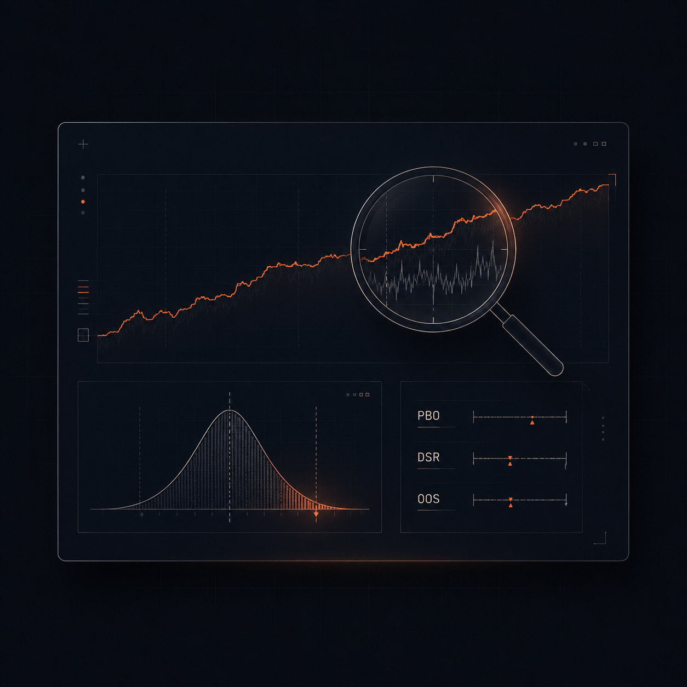

Herramientas que diagnostican lo que tu broker y MetaTrader nunca te enseñan: curve-fitting, look-ahead, edge muerto y los bugs escondidos en tu MQL. Pegas tu informe. Claude te dice si tienes un sistema o un espejismo.
› analizar backtest_EURUSD.htm
parsing 1.284 operaciones...
parámetros optimizados: 7
⚠ PBO 78% — probabilidad de overfitting alta
⚠ Deflated Sharpe 0.31 — el edge no sobrevive al ajuste
sensibilidad: el 91% del retorno depende de 1 parámetro
VEREDICTO: ruido, no edge.
› ▌
La equity curve subía limpia de izquierda a derecha. Sharpe bonito. Drawdown «controlado». Lo pusiste en real y se deshizo en semanas.
No fue mala suerte. Fue una de estas tres, y nunca lo viste venir:
Optimizaste hasta que la curva era perfecta. Ajustaste a ruido del pasado, no a una ventaja real.
Tu lógica usaba información que en vivo aún no existía. El backtest «sabía» el futuro. Tú no.
Compraste o copiaste un robot. Funcionaba… hasta que dejó de hacerlo y no sabías ni por qué.
El problema no es que falle un sistema. Es que no tenías forma de saber por qué.
No es un curso. No son señales. No es otro EA «ganador». Son 15 skills de Claude que abren el capó de tu estrategia y te enseñan los números que MetaTrader esconde y que tu broker prefiere que ignores.
Cada skill es una herramienta de diagnóstico. Pegas tus datos, Claude trabaja, tú decides.
Cada herramienta tendría este valor por separado. En el pack las tienes todas por una fracción.
Te dice si tu backtest es edge o ruido: PBO, Deflated Sharpe y sensibilidad de parámetros.
Caso: pegas 2 años de resultados y descubres que el 90% del retorno colgaba de un solo parámetro.
Infiere las reglas de un EA a partir de su historial de operaciones.
Caso: heredas un robot sin documentación y reconstruyes su lógica de entrada/salida.
Saca Sortino, Calmar, expectancy y time-under-water del .htm que MetaTrader no te muestra.
Caso: el mismo informe de siempre, pero ahora ves cuánto tiempo estuviste bajo el agua.
Caza bugs y riesgos en código MQL4/MQL5 antes de que lo descubra tu cuenta real.
Caso: detecta una gestión de lotes que se rompe tras la primera pérdida grande.
Distribución de drawdowns para responder a una pregunta: ¿es suerte o es sistema?
Caso: ves el rango de drawdowns que el orden real de las operaciones te ocultaba.
Diseña e interpreta walk-forward analysis y su efficiency ratio.
Caso: separas el rendimiento «en muestra» del que de verdad aguanta fuera de muestra.
Caza sesgo de futuro y repainting en tu lógica.
Caso: descubres que un indicador repintaba y «acertaba» velas que aún no habían cerrado.
Descompone una estrategia en reglas, supuestos y los puntos exactos donde se rompe.
Caso: pones en una tabla cada supuesto oculto que tu estrategia da por hecho.
Qué parámetros importan de verdad y cuáles solo añaden ruido al ajuste.
Caso: pasas de optimizar 9 parámetros a los 2 que mueven el resultado.
De una descripción en lenguaje natural a un esqueleto de EA listo para rellenar.
Caso: describes la idea y obtienes la estructura del EA sin partir de cero.
Modeling quality, gaps y spread: la calidad de los datos sobre los que confías.
Caso: descubres que tu 99% de modeling quality tenía huecos en las horas clave.
Mide la correlación real entre tus sistemas antes de combinarlos.
Caso: ves que tus tres «estrategias distintas» eran la misma apuesta disfrazada.
¿Tu ventaja se está muriendo o es solo varianza? Distingue una cosa de la otra.
Caso: detectas a tiempo que el rendimiento reciente cae fuera del rango esperable.
Dónde vive tu edge y dónde se muere: clasifica el régimen de mercado.
Caso: confirmas que tu sistema solo funciona en tendencia y se rompe en rango.
Mete fricción real a tu backtest —slippage variable, spread ensanchado, comisiones, latencia— y te dice cuánto de tu edge sobrevive a condiciones de ejecución reales.
Caso: tu sistema brilla en el tester pero el spread real se come el 70% del edge.
Opus 4.8 ejecuta el análisis cuantitativo multi-paso —parsear el informe, calcular las métricas, cruzarlas y razonar el veredicto— con más fiabilidad que modelos anteriores. Es menos propenso a afirmar cosas sin evidencia y mejor señalando sus propias dudas. Por eso el diagnóstico que sale de estas skills es más de fiar: cada conclusión va atada a lo que dicen tus datos, no a una corazonada.

Pago seguro vía Stripe. El precio fundador es real y subirá cuando cerremos el grupo inicial.
15 skills. Precio fundador 9,49€. Pago único. Las herramientas que te enseñan lo que MetaTrader esconde.
Quiero el kit de diagnóstico — 9,49€ →